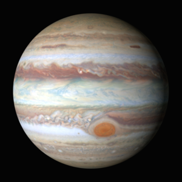
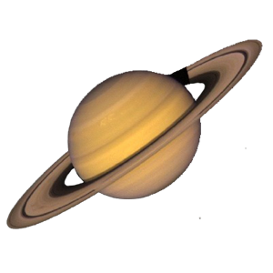
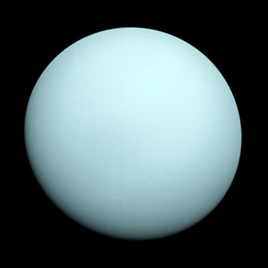
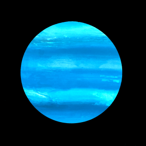

| Planet | Name | Mass(kg) | Diameter | Mean Density | Escape Velocity | Average distance from Sun | Rotation period(length of day in Earth days) | Revolution period(length of year in Earth years) |
|---|---|---|---|---|---|---|---|---|
|  | Jupiter | 1.90x1027 | 142,800 | 1314 | 59500 | 5.203 AU (778,412,020 km) | 0.41 (9.8 Earth hours) | 11.86 |
|  | Saturn | 5.69 x 1026 | 120660 | 690 | 35600 | 9.537 AU (1,426,725,400 km) | 0.44 (10.2 Earth hours) | 29.46 |
|  | Uranus | 8.68 x 1025 | 51118 | 1290 | 21300 | 19.19 AU (2,870,972,200 km) | 0.72 (17.9 Earth hours)(retrograde) | 30,685 (84 Earth years) |
|  | Neptune | 1.02 x 1026 | 49528 | 1640 | 23300 | 30.07 AU (4,498,252,900 km) | 0.67 (19.1 hours) | 60,190 (164.8 Earth years) |